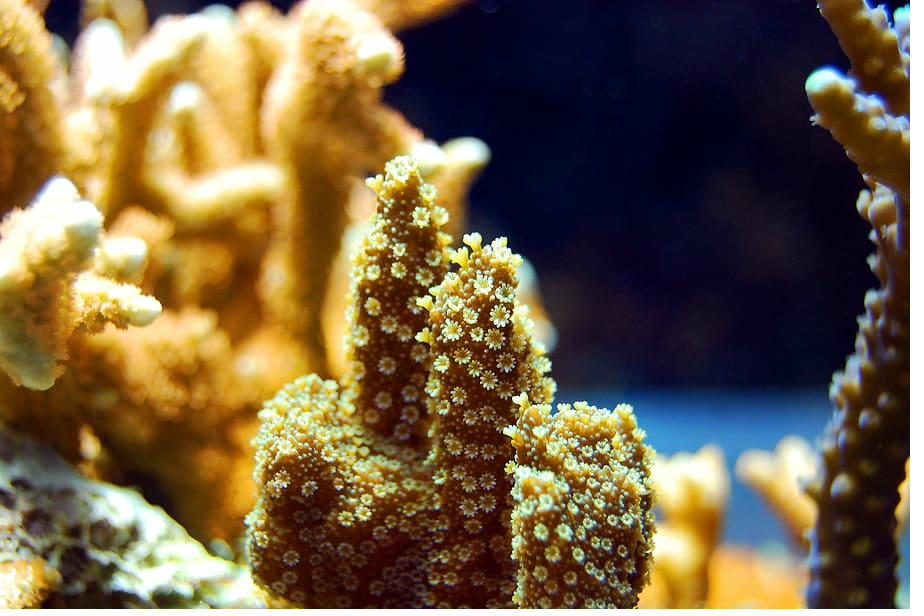

Bělení korálů
Drtivá většina korálových útesů na světě čelí fatálnímu ohrožení a riziku úplného zániku.
Polyp korálu chytá mikroskopické organismy a organické částice z vodního sloupce. Navíc má schopnost fotosyntézy — dokáže získat energii ze slunečního záření podobně jako rostliny. Tuto schopnost mu propůjčují symbiotické sinice jménem zooxanthelly. Jsou to bakterie, které žijí ve tkáních korálů a pomáhají jim fotosyntézou.
Zooxanthelly jsou velmi citlivé na teplotu prostředí. Pokud teplota vody vystoupá nad určitou mez, tito symbionti zahynou. Korál pak navenek ztratí veškeré vybarvení — mluvíme o bělení korálu. Vybělený korál je oslabený a hyne nedlouho poté.

Útes mrtvých korálů zarůstá řasou a naprosto ztrácí svoji původní diverzitu. Společenství se hroutí a většina organismů hyne se svým útesem. Koráli jsou velmi citliví živočichové, kteří potřebují stabilitu prostředí. Po stovky tisíc let jim tropické oceány tuto stabilitu nabízely — dnes však dochází k rychlým změnám.
Velký bariérový útes zažil v posledních dekádách několik masových bělení. Nejničivější události nastaly v letech 1998, 2002, 2016, 2017 a 2020. Při bělení v roce 2016 postihlo silné bělení více než polovinu celého útesu. Vědci varují, že bez radikálního snížení emisí skleníkových plynů čelí útesy katastrofickému úbytku.